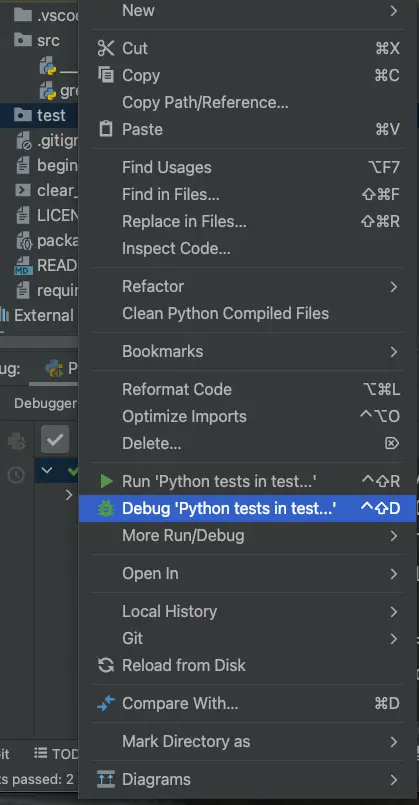
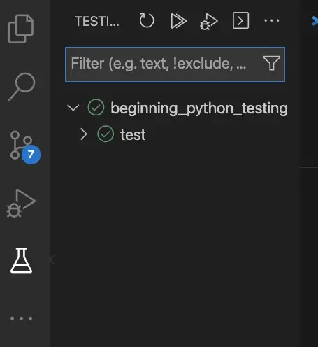
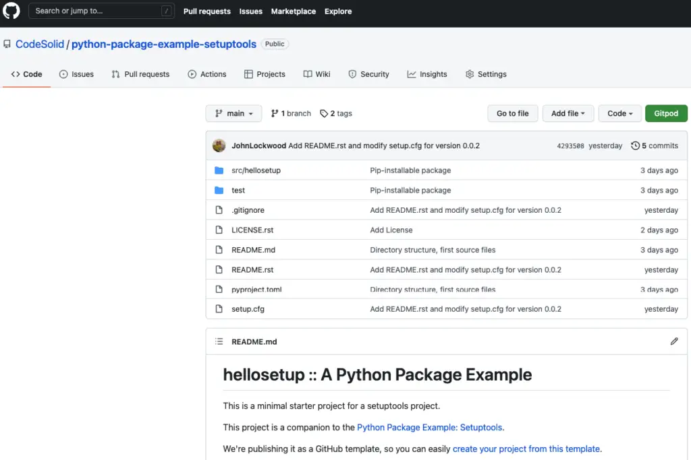

PyCharm vs. VS Code: Which Is Better and Why?¶
PyCharm and VS Code are two of the top choices that stand out from the long lists of Python IDEs you may find. Each of them is great in its own way, but they excel in different areas, and in this article, we compare them across multiple different features to see how they stack up.
Overview¶
The first thing that we must stress at the beginning about PyCharm and VS Code is that they are not both trying to solve the exact same problem. In fact, they are so different in their approaches that I use both in my daily work. This is not just some pathological love of variety, but rather because there are things that they both do so well that I’ve come to rely on them for those tasks.
We will explore the winners and losers over a variety of categories shortly, but to give a summary up front, the difference boils down to just some core differences in the approach.
PyCharm is a purpose-built IDE that specializes in Python development, so for that narrow niche and a few other tasks, the free Community Edition is outstanding. The Professional Edition is not a free product but allows you to install excellent plugins that support many other use cases well. PyCharm is built by JetBrains, the company behind the Java IDE, IntelliJ IDEA.
VS Code, on the other hand, is a free, general-purpose code editor with a variety of IDE features available as extensions for different languages. All the extensions I’ve ever installed for VS Code have been free ones, and I’ve never had to pay anything for the privilege (though for completeness I should point out that there are some paid extensions in the marketplace). VS Code is a project that was developed by Microsoft, and much of it has been released as open source.
So, VSCode or Python? Which is better? Read on to learn more.
Which Is the Better Beginner IDE for Python?¶
Because PyCharm is designed specifically for Python development, it’s much easier to get started with Python development in PyCharm than in VS Code. So if you are brand new to Python and don’t already have some familiarity with VS Code, then PyCharm Community Edition is a clear winner here. Although it’s true that setting up VS Code for Python is mostly just a matter of installing Microsoft’s excellent Python extension, PyCharm still makes many things easier than VS Code.
For example, in PyCharm, the process of debugging or running the tests in the test directory is as simple as right-clicking on the directory and clicking on the appropriate menu item, as shown here:

The same task in VS Code involves a separate configuration step. To be sure, that step is just a matter of clicking a menu item. However, until you know that the flask icon brings up the testing pane, the process is not quite as intuitive.

Verdict: For a beginner Python environment, PyCharm Community Edition wins.
Which is Better for General Editing Tasks?¶
Even if PyCharm is superior as an easy-to-use IDE for Python, for lots of the other things I do all day, I still prefer VS Code.
In the first place, PyCharm is slower to load than VS Code, since it does extensive code analysis and symbol parsing at startup. This means it’s a great IDE once it’s started, but it takes several seconds, whereas VS Code launches instantly.
Secondly, PyCharm works best within the context of a project. Compared to VS Code, it’s difficult (though still not impossible) to navigate to a random file outside the context of a project folder and open it to view it quickly. This means that even if I’m working on a PyCharm project, I’ll still use VS Code quite frequently to explore related project code or type up some quick notes.
Finally, though PyCharm has good support for Markdown, VS Code’s Markdown editing and preview are far superior, not least for being to quickly launch a preview window from the command palette. (Yes, I can hear the PyCharm crowd complaining that there’s a button one can click there. I have no defense for that – I just like my keyboard). For that reason as well, for scribbling a quick note, VS Code is a clear winner.
Verdict for best editor: VS Code.
Which is Better for Remote Development?¶
One of the things I’ve been really excited about lately is remote development. I have some experience with such tools. I’ve used AWS’s Cloud9 in the past, for example, to spin up a cloud IDE I can access remotely. When I started planning a Python course I’d like to offer, for example, it struck me that a standard remote development environment would not only scale well but also would let me easily help individual students when they get stuck.
Since I believe that programmers should start publishing their code on GitHub as soon as they start programming, I was really excited about gitpod.io. Gitpod lets you turn any GitHub repository into a development environment, using VS Code (running in the browser) as the front end. The process is as simple as prefixing the GitHub repository with a Gitpod URL. For example, here’s the Gitpod URL for the repository for my recent article Python Package Example article. With the Gitpod Chrome extension, finding that URL for you was as simple as navigating to the GitHub repository I wanted to share and looking for the green Gitpod button.

The freemium pricing, convenience and GitHub integration of Gitpod together with the VS Code integration makes this solution really attractive for classrooms or small groups of developers to work together.
In addition to Gitpod, there are other tools in this space. Microsoft and GitHub, for example, offer remote development for VS Code on a tool that’s admittedly somewhat pricier, GitHub Codespaces.
One of Gitpod’s blog posts does mention that the remote capabilities for JetBrains products (including PyCharm) will offer the ability to connect to Gitpod from multiple IDEs. However, I think this represents more of a case of Gitpod’s marketing staff getting out over their skis than it is a real thing. So far, the documentation I’ve seen for how to do this involves installing a cumbersome client-side connector. And as for JetBrains, most of their marketing around remote development seems to be aimed at promoting their proprietary back-end, Space. There may be seamless integration with GitHub repositories at some point, but given that JetBrains no doubt sees Microsoft as a competitor, I wouldn’t count on it.
Another caveat when considering PyCharm for remote development is that their website considers this to be an advanced feature, i.e., one that’s available for a premium price. (See the advanced features section below for more on this). With VS Code this is free, and on Gitpod, there are both free and premium options available.
Best for Remote Development: VS Code.
Which Has Better Support for Advanced Python Features?¶
JetBrains almost has a lock on this category, in my opinion. I say almost because as soon as we talk about advanced features, we are by definition wandering into Premium feature territory. Currently, a personal license (i.e., one you pay for yourself) to PyCharm professional starts at $199 per year, with some price breaks in later years.
You can get a full breakdown of what’s missing from the Community Edition on their product comparison page. We’ve already mentioned remote development as being listed there. One prominent difference is support for Web Development. This is a premium feature in PyCharm, but one powerful driver of VS Code’s success is their excellent support for HTML, JavaScript, and especially TypeScript (as you’d expect since it’s also owned by Microsoft).
All these features are free in VS Code. So why do I still list PyCharm as having won the category? I do this because for certain things, once you pay to enable more plugins besides just Python support, many things become much, much easier in PyCharm.
For example, debugging Python code in a docker container is basically a matter of pulling down menus in PyCharm, whereas in VS Code you have a lot more manual configuration to do.
Of course, there are some cases where PyCharm has the edge in the Community Edition as well. Debugging features and the ease of setting up tests (already mentioned) come to mind.
The verdict: PyCharm wins if you have money to spend on a professional IDE. Otherwise, use VS Code.
Which Has Better Support for Languages Other Than Python?¶
In our discussion of advanced Python features, we talked a lot about the features that the PyCharm professional edition adds on top of those in the community edition. One of those features was web development, and we saw that this is available to us and quite good in VS Code, but it’s a premium feature in PyCharm.
To give another example, I do a lot of Terraform work at my current day job. The professional edition of PyCharm allows me to install JetBrains’ Terraform plugin, which provides an almost perfect ability to navigate between symbol definitions and usages in Terraform code. VS Code also has a Terraform plugin that offers some features, but PyCharm’s code navigation and other IntelliSense features make it the hands-down winner in this case.
Overall, PyCharm and other IDEs from JetBrains follow a similar pattern. Each IDE is purpose-built for a specific language, and enables features and frameworks from that language in a well-crafted way, while allowing plugins to fill in for other languages. Thus, for example, PyCharm has great features for Python development specifically, while enabling plugins for other languages. Similarly, IntelliJ IDEA has great features for Java, but you could install the Python plugin to get some PyCharm support. That won’t make it the custom-built Python IDE that PyCharm is, but it will enable Python development in a minimal way.
However, generally speaking, the PyCharm plugins do provide such great navigation and code analysis support that our verdict is the same as in the last section.
My final answer? PyCharm wins if you have money to spend on a professional IDE. Otherwise, use VS Code.
Code Editors vs Heavyweight IDEs for Python¶
One of the things that occurred to me as I was writing this article is that some of what made me a JetBrains customer for so long was my experience with IntelliJ IDEA. In that case, one of the main competitors to JetBrains was another heavyweight IDE Eclipse. Seen in that context, IDEA was so much better that there really was no comparison, in my mind (though in fairness, Eclipse did have its fans).
In the case of Python, however, I do wonder how much a heavyweight IDE is really necessary compared to a fast, lightweight editor like VS Code. This is because unlike Java, where JetBrains made such great strides, Python has a wealth of other easy, light options for writing and executing code.
I’m thinking of things like the Python shell (REPL), or IPython, which takes the Python shell to a whole new level and adds magic commands to better integrate things you might otherwise run at the terminal. Another lightweight solution for mixing Python, graphics, and documentation that comes to mind are Jupyter notebooks, which run in the browser. As an aside, they also can run in PyCharm or VS Code (and in that case, I prefer VS Code’s implementation).
The verdict: If you agree with my assessment, VS Code may be a better choice here. However, given that the idea is that you can run your code outside either tool, that’s only because a lightweight editor has an edge.
Final Thoughts¶
VS Code and PyCharm are very different tools. PyCharm is great both for beginning developers who can use the community edition to get easy-to-run features. The professional edition adds both advanced Python features and support for other languages, but at this point, the solution is no longer free. The downside though is that the remote development features are less useful, and it’s not a Swiss-army-knife editor like VS Code.
VS Code, on the other hand, has a much richer plugin ecosystem, great remote development support, and is a tool you can use over and over again to quickly create documentation and work in multiple languages. For tasks specific to Python, it is “good enough”, but it lacks the ease of use and polish of PyCharm.
As I said at the outset, because of their overlapping strengths and weaknesses, I use both tools in my daily work. Even if you decide against that approach, it’s a very good idea to give serious thought to at least evaluating both tools.